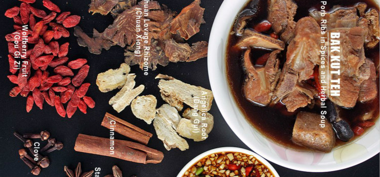
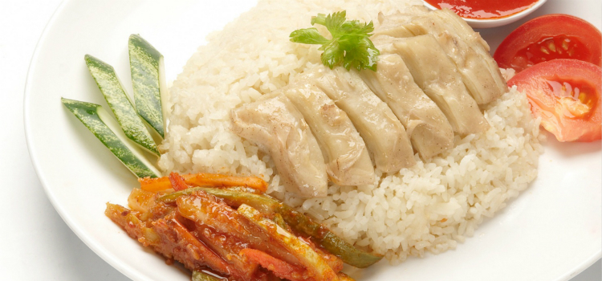
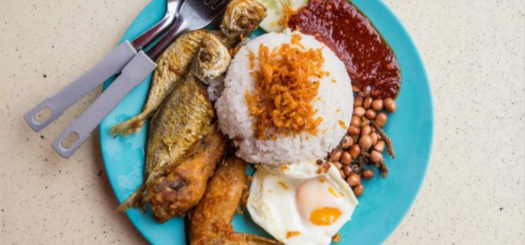

多民族聚居衍生出多元的饮食文化，中餐、马来餐、印度餐、中东美食以及最具新加坡特色的娘惹风味等美食荟萃于狮城。
当地菜品
肉骨茶 Bak-Kut-Teh
“肉骨”是指带肉的骨配合中药和香料（包括八角茴香、桂皮、丁香、大蒜）熬成的汤，而“茶”字则是源自创始人的名字“李文地”，因福建话中的「地」与「茶」发音相近，故后来被称为「肉骨茶」。相传最早是到南洋谋生计的华人们用以驱寒和消除疲劳的配饭汤，后来经过不断的改良和创新。

海南鸡饭
选用骨瘦皮纤的鸡用沸水煮或热水烫熟后浸入冰水令其肉质紧致滑嫩，再伴上以高汤、姜和香兰叶煮成的油米饭和红辣椒蘸酱，令人食指大动。

椰浆饭
用椰桨和香兰叶浸透香米，可以佐以炸鱼、炸鸡翅、“乌打 (otah)”（即香辣烤鱼腩）、炸“江鱼仔”（本地凤尾鱼）、花生、鸡蛋、黄瓜片，和辛香可口“参峇酱”（辣椒酱）。

加东叻沙
细滑椰浆与辛辣香料熬成汤底，再浇上海鲜和炸鱼饼等食材。区别于普通的叻沙，在于它的米粉是可以直接用勺子捞起的短粉条。标榜自己为正宗的店铺很多，但“胡须（janggut）”版更为人所知，源于一位下巴有痣须的摊主外号“janggut”（马来语“胡须”），由其家人继续经营的摊位目前在女皇道购物中心。

辣椒螃蟹
这道菜的精髓就在于为肥美鲜蟹调味的精心研制的酱料，其起源于1956年的一家流动小摊位，摊主夫妇尝试用番茄酱和辣椒酱炒蟹，在加冷河畔沿街大受欢迎，后来还开了“棕榈滩海鲜”餐馆 (Palm Beach Seafood)。名厨许国辉师傅的餐馆“龙凤大饭店”，用参巴酱、番茄酱和鸡蛋改进了原来的配方，这也成为新加坡辣椒螃蟹目前最常见的版本。
咖喱鱼头
一位来自印度南部喀拉拉邦的小印度餐馆老板将香浓可口南印度咖喱和华人爱吃的鱼头组合成一道佳肴，喜欢重口味料理的朋友一定要试试。
福建面
娘惹 (海峡华人) 风味，用猪骨和虾头熬制的高汤，黄面条和粗米粉加上海鲜、五花肉丝、鸡蛋，猪油渣，参巴辣椒酱和酸柑汁等混合翻炒。
印度煎饼
质朴面团在大师娴熟地拍打和拉扯间华丽变身，外酥内软的面饼一口咬下去脆爽可口，搭配鱼或羊肉咖喱，滋味加分。
炒萝卜糕
源于潮州移民带来的潮汕“炒糕粿”，将米粉和白萝卜丝混合后蒸熟，鱼酱和甜味黑豉油腌制完切碎，放入蒜、鸡蛋和菜脯爆炒。
罗惹
正如其名，马来语意为“不拘一格的混合”，混合了蔬菜、水果（通心菜、豆芽、瓜、沙葛、菠萝、青芒、莲雾等）、烤豆卜和油条的本地沙拉，浇上黑色酱汁（虾酱、辣椒酱、糖、青柠等混合），伴上花生碎和姜花末的大杂烩。
咖椰吐司
炭烧或焗脆的面包片包裹着黄油碎还有椰果和鸡蛋制成的咖椰酱，再来一杯咖啡或茶给你一整天的满满元气。
觅食好去处
老巴刹
特色：铸铁建筑物内，由菜市场(Telok Ayer Market)改建，各种特色美食汇聚。
地址：18 Raffles Quay
前往方式：铁红色南北线 NS26, 绿色东西线 EW14, Raffles Place 站下, 沿着 D’almeida Street 走2分钟, 转去 Robinson Road 走 3-4 分钟。
营业时间：每天8:00-22:00
旧机场路熟食中心
特色：推荐多丽哥粿汁，加东亚顺蚝煎，南星福建炒虾面和新美香卤面。
地址：Block 51, Old Airport Road
前往方式：地铁黄色环线 CC7, Mountbatten 站下, 沿着 Old Airport Road 走 5 分钟。
营业时间：每天10:00-22:00
纽顿熟食中心
特色：推荐海鲜烧烤，沙嗲(Satay)和辣椒螃蟹。
地址：500 Clemenceau Avenue North, Singapore
前往方式：地铁红色南北线 NS21 Newton 站下,沿着 Scotts Road 走 2 分钟, 再过天桥。
营业时间：每天12:00-次日 2:00
武吉知马熟食中心
特色：一楼是菜市场，二楼是熟食中心，推荐炒粿条、福建面、海鲜 BBQ和成兴起骨鸡饭。
地址：116 Upper Bukit Timah Road
前往方式：乘坐 52, 61, 66, 75, 77, 157, 170, 171, 173, 174, 184, 852, 961, 961c 号巴士到 Shell Kiosk 站下，车站编号 42071，沿着 Upper Bukit Timah Road 走 1 分钟。
营业时间：每天8:00-22:00
牛车水大厦熟食中心
特色：品尝美食请上2楼，推荐亨记鸡饭（#02-131）和联合本记煲饭（#02-198）。
地址：Level 2, 335 Smith Street
前往方式：地铁紫色东北线 NE4, Chinatown 站, 沿着 New Bridge Road 走3分钟, 转入 Smith Street 走 1 分钟。
营业时间：每天7:00-22:00
麦士威路美食中心
特色：推荐天天海南鸡饭，老伴豆花，真真粥品和金华鱼片米粉。
地址：1 Kadayanallur Street
前往方式：地铁紫色东北线 NE4, Chinatown 站, 穿过 Mosque Street, 沿着 South Bridge Road 走 6 分钟: 或乘坐 80, 145 号巴士到 Maxwell Road Food Centre 站下车, 车站编号 05269, 走 1 分钟。
营业时间：每天8:00-22:00
东海岸海鲜中心
特色：推荐珍宝海鲜楼和长滩海鲜楼。
地址：1202 East Coast Parkway
前往方式：乘坐 196 号巴士至 ParkwayParade 后沿海边步行前往。
营业时间：每天17:00-23:00
牛车水美食街
特色：有着众多传统商店和地道风味的露天餐饮街，中式美食种类多，推荐鱼丸面和薄饼卷。
地址：335 Smith Street
前往方式：地铁紫色东北线 NE4, Chinatown 站, 沿着 New Bridge Road 走 3 分钟, 转入 Smith Street 走 1 分钟。
营业时间：每天 17:00-23:00
新加坡摩天轮下的复古路边摊
特色：重现新加坡的旧日风貌，复刻六七十年代的街景，带有浓厚的怀旧色彩， 让你品尝新加坡的街边美食。冰冷的钢筋水泥丛中一道复古气息的风景线，爱美食又热衷摄影的好去处。推荐新明路榕城肉骨茶，宏茂桥永兴福建面，樟宜萝卜糕和红豆冰球。
地址：#01-09/10/11/12, Singapore Flyer, 30 Raffles Avenue
前往方式：地铁黄色环线 CC4, Promenade 站下，出口 A， 朝摩天轮走 5 分钟。
营业时间：周一至周四10:30-22:30, 周五至周日10:30-23:30
Al-Ameen食阁
特色：24小时营业大排档式餐厅，推荐印度拉茶，咖喱鸡，黄油鸡和印度煎饼。
地址：4 Cheong Chin Nam Road
前往方式：乘坐 67, 75, 170, 171, 173, 184, 852, 961, 961C 号巴士到 Bukit Timah Shopping Centre 对面的车站下车。
营业时间：24 小时
米其林星级餐厅
米其林星级是资深吃货的重要觅食指南之一，评审员会根据食材质量、厨艺和独特性等标准进行评选。新加坡的饮食文化深厚而又多元，2017共有38家餐馆获得星级，其中有朴实无华的小贩摊档，也有价格昂贵的高级餐馆。
米其林星级: ***
Joël Robuchon 餐馆
特色：屡获殊荣名厨餐馆，艺术装潢风格配上现代精致法式菜肴，是新加坡唯一荣获三星的餐馆。推荐农家珍珠鸡、烤鹅肝、和肉羹水煮龙虾。
地址：Hotel Michael 8 Sentosa Gateway Level 1
电话：+65 6577 6688 / +65 6577 7888
网址：www.rwsentosa.com/
米其林星级: **
L’Atelier de Joël Robuchon 餐馆
特色：厨房和用餐区之间只有一张柜台隔开，食客用餐时可以看到厨房里的一切。这家现代法式餐馆的装饰格外引人注目，由世界著名的设计师 Pierre-Yves Rochon 设计。
地址：Hotel Michael 8 Sentosa Gateway Level 1
电话：+65 6577 6688 / +65 6577 7888
Les Amis 餐馆
特色：开办于 1994 年，位于邵氏大厦，是 Les Amis 集团创办的第一家餐馆，由厨师长 Sebastien Lepinoy 掌勺，提供具有亚洲美感的法式美食。
地址：Shaw Centre 1 Scotts Road #01-16 Singapore 228208
电话：+65 6385 0498
安德烈餐馆 (Restaurant André)
特色：八个元素：独特、纯粹、质地、回忆、盐巴、南法、工艺、风土，称为 “八角哲学”，是牛车水安德烈餐馆(Restaurant Andre)江振诚 (Andre Chiang) 的烹饪理念。江振诚出生于台湾，在到新加坡之前，曾在米其林三星餐馆 Le Jardin des Sens 等多家法国餐馆做厨师。
地址：41 Bukit Pasoh Road Singapore 089855
电话：+65 6534 8880
四川饭店 (Shisen Hanten)
特色：这家日式餐馆位于新加坡文华大酒店，是这个品牌在国外开设的第一家餐馆，这个品牌共有 14 家分店，遍及六座城市。由第三代厨师 Chen Kentaro 掌勺，借鉴陈氏麻婆豆腐制作日式四川菜，这是这家餐馆最受欢迎的家族食谱菜肴。
地址：新加坡文华酒店 (Mandarin Orchard Singapore)333 Orchard Road Level 35 Singapore 238867
电话：+65 6831 6262 / +65 6831 6266
小康和 (Shoukouwa)
特色：这家日式高级餐馆由 Emmanuel Stroobant Group 集团创办，始终提供世界一流的江户前寿司，所用新鲜海鲜和食材都是当天从东京筑地市场空运到新加坡。
地址：浮尔顿一号 (One Fullerton)1 Fullerton Road #02-02A Singapore 049213
电话：+65 6423 9939
米其林星级: *
Alma by Juan Amador 餐馆
特色：位于五星级酒店良木园酒店 (Goodwood Park Hotel)，提供带亚洲风味的西班牙欧式菜肴。大部分菜肴包括肉类都是小分量型，方便同时品尝多种菜肴。餐馆由德国厨师 Juan Amador 掌勺，此前他自己的德国曼海姆市 Amador 餐馆获米其林三星级。
地址：Goodwood Park Hotel 22 Scotts Road Singapore 228221
电话：+65 6735 9937
The Kitchen at Bacchanalia 餐馆
特色：餐馆有 36 个座位，提供椰奶烩饭和意大利面，由德国巴西混血厨师 Ivan Brehm 掌勺，他曾在纽约米其林三星餐馆 The Fat Duck 和 Thomas Keller 的 Per Se 餐馆工作，磨练出高超的厨艺。
地址：39 Hong Kong Street Singapore 059678
电话：+65 9179 4552
béni 餐馆
特色：这家精美的餐馆融合法式菜肴和新鲜的日本食材。在舒适的氛围里享用由厨师 Kenjiro Hashida 亲自准备的一道道料理。
地址：文华购物廊 (Mandarin Gallery)333A Orchard Road #02-37 Singapore 238897
电话：+65 9159 3177
Candlenut 餐馆
特色：由本地新兴年轻厨师李小明 (Malcolm Lee) 创办，融合现代和传统工艺，以创新方式制作本地土生华人菜肴，通常结合马来和印尼烹饪工艺，采用中式料理食材和香料。
地址：Block 17A Dempsey Road Singapore 249676
电话：1800 304 2288
Corner House
特色：餐馆位于被列入联合国教科文组织世界遗产名录的新加坡植物园，由本土厨师陈日锃（Jason Tan） 提供植物源美食，菜肴以蔬菜为主。
地址：新加坡植物园 EJH Corner House 1 Cluny Road Singapore 259569
电话：+65 6469 1000
翡翠金阁 (Crystal Jade Golden Palace)
特色：这家中餐馆位于新加坡中心购物带的百利宫，因其始终美味可口的蒸笼或小蝶广东点心，以及融入现代风味的广东和潮汕美食而赢得了众多荣誉。
地址：百利宫 (Paragon Shopping Centre) 290 Orchard Road #05-22 Singapore 238859
电话：+65 6734 6866
Cut 餐馆
特色：这家牛排餐馆位于滨海湾金沙，提供用硬木和木炭烤的各种烤肉。许多精选牛肉任意挑选，有澳大利亚安格斯牛肉、美国、澳大利亚及日本和牛肉、日本兵库县 A5 神户牛肉等。
地址：滨海湾金沙购物城 (The Shoppes @ Marina Bay Sands) 10 Bayfront Avenue B1-71 Singapore 018956
电话：+65 6688 8517
森 (Forest)
特色：本地名厨打破传统，以创新方式制作现代中式菜肴。他的烹饪略带泰国风味，因为他非常喜欢夫人的泰国传统美德。
地址：Equarius Hotel 8 Sentosa Gateway Lobby圣淘沙名胜世界 (Resorts World Sentosa)：Singapore 098269
电话：+65 6577 6688
吊桥头大华猪肉粿条面 (Hill Street Tai Hwa Pork Noodle)
特色：获得米其林星级的首家小食摊，在获得这项荣誉之前，摊前经常排满人，甚至需要排一个小时长队。自从 1932 年开办以来，虽然搬迁几次，但一直是享受美味肉脞面（肉末面）的最佳去处。
地址：大华餐室 (Tai Hwa Eating House) 466 Crawford Lane #01-12 Singapore 190465
电话：+65 6292 7477
香港油鸡饭面 (Hong Kong Soya Sauce Chicken Rice & Noodle)
特色：陈翰铭（Chan Hon Meng）开办的小贩摊档也享有盛名，除了店名体现的两道招牌菜之外，还提供美味可口的烧肉贩、叉烧饭和面。
地址：牛车水大厦熟食中心 (Chinatown Food Complex) Blk 335 Smith Street #02-166 Singapore 050335
JAAN 餐馆
特色：其名源自古代梵语，意指 “碗”，在这家有 40 个座位的餐馆，出生于英格兰的 Kirk Westaway 厨师用新鲜天然食材制作现代法式菜肴。
地址：Equinox Complex Swissôtel The Stamford 2 Stamford Road Level 70 Singapore 178882
电话：+65 6837 3322
利苑酒家 (Lei Garden)
特色：这家中餐馆是一餐饮集团旗下分店之一，该集团总有 24 家分店，遍及香港、澳门、中国和新加坡，其中也有其它几家分店获得米其林星级。招牌菜是北京烤鸭和各种炖汤。
地址：赞美广场 (Chijmes) 30 Victoria Street #01-24 Singapore 187996
电话：+65 6339 3822
澳西亚餐馆 (Osia)
特色：澳西亚餐馆 (Osia) 的肉类和精选海鲜都是从澳大利亚空运，大部分是从小型农场采购。这家餐馆新颖别致，中间放有一个石炉，澳大利亚名厨 Scott Websitester 现场制作新颖独特的当季菜肴。
地址：圣淘沙名胜世界 (Resorts World Sentosa)：节庆大道 (Festive Walk) 8 Sentosa GatewaySingapore 098269
电话：+65 6577 6560
莆田餐馆（吉真那路）
特色：老板方志忠 (Fong Chi Chung) 为了谋求更好的生活而离开自己的家乡福建莆田。2000 年，他在新加坡开了自己的第一家中国菜馆，店名取自家乡地名莆田以弘扬家乡文化，莆田品牌目前在新加坡已有十家分店。
地址：127 Kitchener Road Singapore 208514
电话：+65 6336 2184
Rhubarb
特色：英国厨师 Paul Longworth 开的这家舒适餐馆位于环境优雅的的达士敦山的一间店屋，店内只有七张饭桌。这家法式餐馆的季节式菜单制作精巧、有各种精选菜品。
地址：3 Duxton Hill Singapore 089589
电话：+65 8127 5001
Shinji (美芝路)
特色：这是厨师长 Shinji Kanesaka（已经获得米其林二星）在日本国外开的第一家餐馆，由主厨 Koichiro Oshino 执掌。这家餐馆精心制作的 omakase （厨师精选）菜肴，包括生鱼片配寿司、蒸五小时的北海道鲍鱼等菜肴。
地址：莱佛士酒店 (Raffles Hotel) 1 Beach Road #02-20 Singapore 189673
电话：+65 6338 6131
Shinji (东陵路)
特色：第二派以厨师 Shunsuke Kikuchi 为主，他在这家陈设简单的 18 座餐馆精心制作传统江户前寿司、特级生鱼片和其它正宗日本菜。
地址：新加坡圣瑞吉酒店 (The St. Regis Singapore) 29 Tanglin Road Singapore 247911
电话：+65 6884 8239
夏苑中餐馆 (Summer Pavilion)
特色：厨师长张肇刚（Cheung Siu Kong）改良小笼包等广东菜肴。这家餐馆的改良版小笼包带有龙虾肉和蟹肉馅，还包有龙虾汤，体现其高超的厨艺。
地址：丽嘉登美年大酒店 (The Ritz-Carlton Millenia Singapore) 7 Raffles Avenue Singapore 039799
电话：+65 6434 5286
鮨一 Sushi Ichi
特色：这家餐馆是日本东京 Ginza Sushi 的一家分店，有 24 个座位，餐馆内装饰呈禅宗风格，提供江户前寿司，寿司里的海鲜新鲜美味，都是从著名的筑地市场 (Tsukiji Market) 购买。餐馆还提供精选怀石菜和几种配菜。
地址：Singapore Marriott Tang Plaza Hotel 320 Orchard Road Singapore 238865
电话：+65 6235 5514
Terra 餐馆
特色：这家日本-意大利风味餐馆根据精选季节性食材经常更换菜单。生于东京的 Seita Nakahara 厨师曾师从科班出身意大利名厨，他以自己所学技艺用当天新鲜食材制作美味可口的意大利面。
地址：54 Tras Street Singapore 078993
电话：+65 6221 5159
The Song of India 餐馆
特色：这家精美的餐馆是唯一入榜的印度菜肴餐馆，提供现代印度菜肴。去吃自助餐，尽享做工精致、味道丰富的美食。
地址：33 Scotts Road Singapore 228226
电话：+65 6836 0055
Waku Ghin
特色：到 Tetsuya Wakuda 名厨在滨海湾金沙开的餐馆尽情享受十道精选套餐。餐馆舒适怡人，有 25 个座位，其名取自两个日语词 — waku 意指“跃升”，而 ghin 意指“银” — 以其当季最佳食材美食和令人陶醉的景色著称。
地址：滨海湾金沙购物城 (The Shoppes @ Marina Bay Sands) 10 Bayfront Avenue Level 2-01 Singapore 018956
电话：+65 6688 8507
Braci
特色：店内只有16个座位，开方式厨房占用了1/3的空间。咖啡色木墙、面向河景的大窗和简单的布置，简约时尚。来自普利亚的厨师受到家里的熏陶，烹调风格充满意国南部色彩，却又带点亚洲风情。帕尔马干酪茄子鲈鱼番红花汁及无花果金橘冻鹅肝等是招牌菜。进餐前必定要到天台户外座位喝一杯兼欣赏迷人的河景。
地址：Level 5, 52 Boat Quay
Cheek by Jowl
特色：凭着一切从简的信念，主厨兼店东Rishi纯以巧妙的厨艺制作出香气四溢且感觉清新的食物。地点靠近商业区，午市时是上班族的据点，喜欢在较安静的环境用餐，请考虑晚市时段到访。午市的二、三及五道菜套餐物有所值。精选酒单罗列的是以风格排序的新世界葡萄酒。
地址：21 Boon Tat Street
江师傅
特色：毫不沾染世俗尘烟的小店、门牌亦简单地以“江师傅”作招徕。顾名思义，江师傅就是这里的主厨，他对烹饪有一份坚持，从不假手于人，更会亲自到市场采购食材，甚至不惜成本购入各种野生鱼类，让客人品尝到有素质且味美的菜肴。订座时切记询问哪些时令菜式需要预订，5人或以上建议尝尝厨师发办。
地址：25 Mackenzie Road
Garibaldi
特色：店东兼主厨年轻时曾于欧亚多个国家跟随多位意大利名厨工作，造就了此家在本地名闻遐迩的意大利餐馆。选用的食材大部分来自意大利。藏红花牛肘烩饭(Ossobuco) 、米兰炸猪排(Costoletta alla Milanese)及提拉米苏是其名菜。任职调酒师的店主妻子帮忙挑选的酒单，涵盖逾七千款意大利及法国名酿。
地址：36 Purvis Street, #01-02
Iggy’s
特色：翻新后的餐厅，透着时尚典雅气息。新的团队让食客从服务至食物都有崭新体验。碟上的食物看似简单，却是精湛的厨艺与高素质食材的结合。餐单随季节更换。Iggy’s风格小吃、Carabineros意大利饭、马鲛鱼木薯珍珠多蜜酱汁是招牌菜。偌大的玻璃窗让你观看厨房内的景致。
地址：Hilton Hotel, Level 3, 581 Orchard Road
Labyrinth
特色：创新方式演译的食物，从外观上看令人疑惑，不知所吃为何物，然而品尝一下，风味却传统可口，让你再三回味。大厨从祖母身上得到启发的创意凤梨炒饭并不是常见的凤梨炒饭：意式蛋黄酱、凤梨雪芭、葡萄干、腰果及米通，味道与份量调配得刚好，这道菜颇有特色。
地址：Esplanade Mall, #02-23, Marina Bay Promenade, 8 Raffles Avenue
META
特色：餐厅大部分空间划为开放式厨房，食客可坐在黑色大理石餐桌前边用餐，边观赏厨房内的情形，趣味盎然。这里只供应厨师套餐，韩国主厨以现代欧陆烹调方法作基础，加入韩国元素，并选用来自韩国、亚洲和澳洲的时令食材，惊喜处处。附加餐单内的韩式海鲜pancake传自主厨的祖母，值得一试。
地址：9 Keong Saik Road
Saint Pierre
特色：小小的餐室座位不多，好处是能让店东兼主厨能更好地照顾每桌客人和处理每一道菜肴。时尚且有水准的美馔以日本食材炮制而成，带有亚洲的烹调风味。餐厅有素食供应，但客人需主动向店家查询，此外还有专为儿童而设的菜单。能远眺滨海湾金沙，景色优美，尤其是晚上，是浪漫约会必选之地。
地址：One Fullerton, #02-02B, 1 Fullerton Road
夏宫
特色：这中菜厅的装潢带浓浓中国色彩，金黄、大红等色调尽显富丽堂皇，宽敞的布置予食客宁静而舒适的用膳空间。这里由中国厨师主理，用料新鲜上乘，供应味道丰饶多姿的粤菜，招牌菜有酥炸田鸡腿、金牌脆皮烧肉、蟹肉菠菜羹及西柠杏香鸡等 。
地址：Regent Hotel, Level 3, 1 Cuscaden Road
御宝阁
特色：于2016年迁至区内更大型的商场内，室内设计焕然一新，大片玻璃窗引入自然光，气氛轻松。餐厅供应的传统潮州菜选择丰富，个别菜式如惹味香脆的鲜虾芋头烙及每日限量供应的鲜滑冻黄膏蟹，并不常见。此外，大部分菜式都有大、小份量供应，让食客点菜时选择。
地址：ION Orchard #03-05, 2 Orchard Turn
Whitegrass
特色：餐室装潢十分型格时尚，本地艺术家的绘图及别致的花草装饰，更添生气。这儿只供应套餐，餐单内容会随时令经常更新，食材全部由澳洲和日本进口。满是冲劲的澳洲主厨烹调的菜式带有亚洲风味。热情好客的侍应生会为食客详述每道菜式的原由。还有供应素菜餐单供素食人士享用。
地址：#01-26/27 Chijmes, 30 Victoria Street